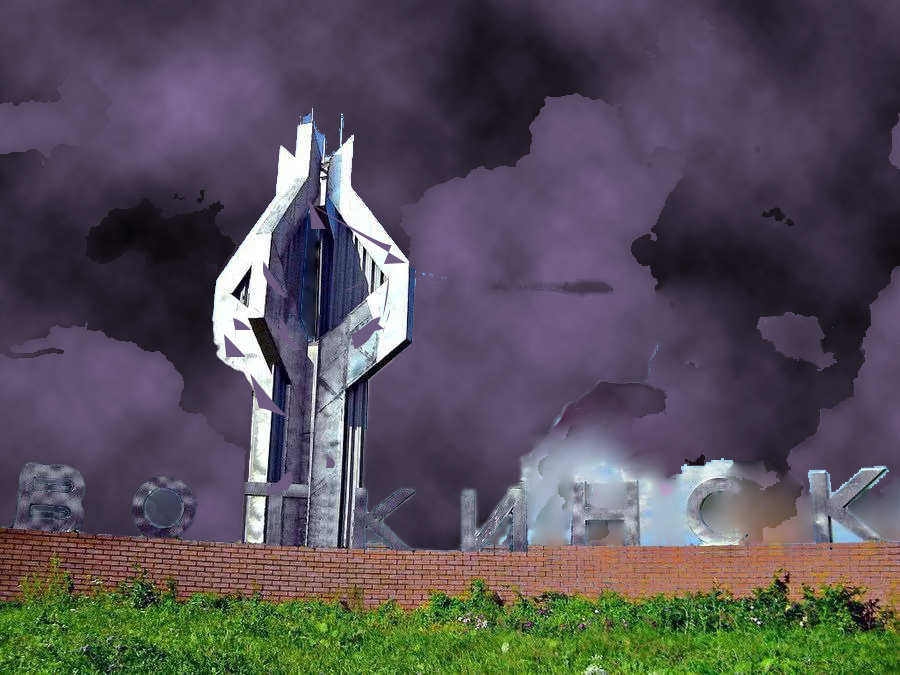
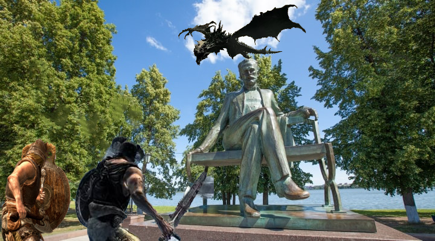
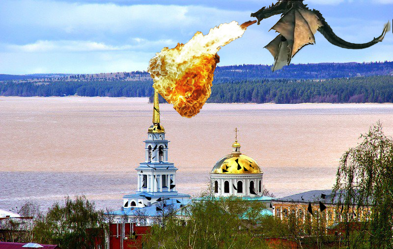

Открытое письмо разрaботчикaм Skyrim
Dear developers of the game Skyrim, we came up with an idea for you to make a new version of the game of the city of our planet, we suggest you make the city of Russia-Votkinsk
Dear developers of the game Skyrim, we came up with an idea for you to make a new version of the game of the city of our planet, we suggest you make the city of Russia-Votkinsk
Map №1: Obelisk of the city of Votkinsk
Geoposition Map number 2: Monument to Ulfric, King of Nations (developers, help to come up with a name if you do not like it).
Geoposition Map No. 3: Church of St. Ulfric
Geoposition 